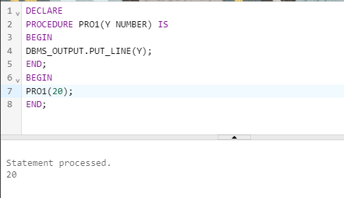
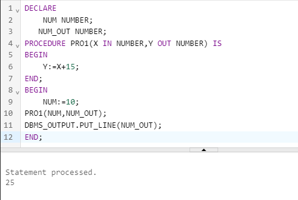

A procedure or stored procedure is a named PL/SQL block that can accept parameters (sometimes referred to as arguments), and be invoked. Generally speaking, a procedure is mainly used to perform one or more specific task. A procedure has a header, a declaration section, an executable section, and an optional exception-handling section.
Syntax:-
CREATE [OR REPLACE] PROCEDURE procedure_name
[(parameter1 [mode1] datatype1,....)]
IS/AS
BEGIN
pl/sql executable statements ;
[ EXCEPTION
exception handling;]
END [procedure_name]
TYPES OF PROCEDURE:-
1. Unnamed
2. Named
3. Stored.
MODES OF PARAMETERS:-
1. IN(DEFAULT)
2. OUT
3. IN OUT
1.IN MODE
An IN parameter lets you pass a value to the subprogram. It is a read-only parameter. Inside the subprogram, an IN parameter acts like a constant. It cannot be assigned a value. You can pass a constant, literal, initialized variable, or expression as an IN parameter. You can also initialize it to a default value; however, in that case, it is omitted from the subprogram call. It is the default mode of parameter passing. Parameters are passed by reference
Examples:-
DECLARE
PROCEDURE PRO1(Y NUMBER) IS
BEGIN
DBMS_OUTPUT.PUT_LINE(Y);
END;
BEGIN
PRO1(20);
END;
output:-

2.OUT MODE
An OUT parameter returns a value to the calling program. Inside the subprogram, an OUT parameter acts like a variable. You can change its value and reference the value after assigning it. The actual parameter must be variable and it is passed by value.
Examples:-
DECLARE
NUM NUMBER;
NUM_OUT NUMBER;
PROCEDURE PRO1(X IN OUT NUMBER,Y OUT NUMBER) IS
BEGIN
Y:=X+15;
END;
BEGIN
NUM:=10;
PRO1(NUM,NUM_OUT);
DBMS_OUTPUT.PUT_LINE(NUM_OUT);
END;
output:-

3. IN OUT MODE
An IN OUT parameter passes an initial value to a subprogram and returns an updated value to the caller. It can be assigned a value and the value can be read. The actual parameter corresponding to an IN OUT formal parameter must be a variable, not a constant or an expression. Formal parameter must be assigned a value. Actual parameter is passed by value.
Examples:-
DECLARE
NUM NUMBER;
PROCEDURE PRO1(X IN OUT NUMBER) IS
BEGIN
X:=X+15;
END;
BEGIN
NUM:=10;
PRO1(NUM);
DBMS_OUTPUT.PUT_LINE(NUM);
END;
output:-

CALLING AND DROPPING A PROCEDURE
1. CALLING A PROCEDURE:-
A procedure is called as PL/SQL statement.A procedure can be called from any PL/SQL program by giving its name followed by the parameters
syntax:-
Begin
pro1(10);
end;
/
execute procedure_name;
2. DROPPING A PROCEDURE:-
To drop a procedure ,DROP PROCEDURE statement is used .In order tp drop a procedure,one must either own thw procedure or have DROP ANY PROCEDURE system privilege.
syntax:-
DROP PROCEDURE procedure_name;
Example:-
DROP procedure pro1;